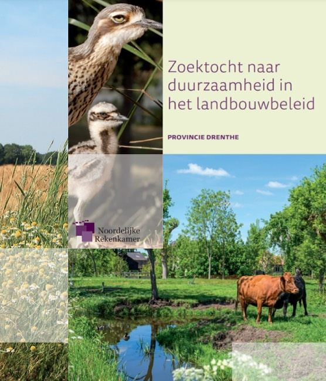

Australische griel in een Drents rapport
16 april 2021 · Provincie Drenthe
- Op de foto
- Australische griel
- Het ging over
- Inheemse akkervogel

Een rapport over het landbouwbeleid in de provincie Drenthe. Als het doel is om een Australische griel (Bush thick-knee) hier te krijgen verwacht ik nog minimaal een deel 2!